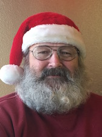
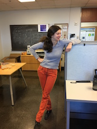
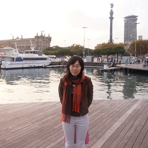
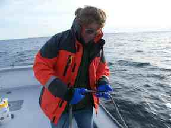

People
Principle Investigator
Rob Hetland
Rob Hetland is a Professor in the Department of Oceanography at Texas A&M University. His research is focused on numerical simulation of flow in estuarine, coastal, and continental shelf environments; applications include examining plankton bloom dynamics, formation and destruction of continental shelf hypoxia, and real-time surface current forecasting.
Researchers
Kristen Thyng
Kristen attended Whitman College for her bachelor degree in physics, graduating in 2005, before headed back to Seattle where she is from to attend the University of Washington. There, she studied applied mathematics for her masters degree (2007), then earned her PhD in mechanical engineering in 2012. She joined PONG in 2012 and is now an Assistant Research Professor.
Dajiro Kobashi
DJ moved to the United States to pursue a doctoral degree at LSU after he completed his masters degree from Tokai University in Japan. He is interested in coastal dynamics and its links to ecosystems and human activities. He joined PONG in February 2014 after he worked at NOAA in DC and then spent 4 years in Australia where he studied climate adaptation and coastal physical processes (internal tides and mixing in shallow coastal waters) by means of field measurements and numerical modeling.
Steven Baum

Beer
Students
Tianxiang ‘Ronnie’ Gao
Ronnie is a third year PhD student who received his B.S. in oceanography from Ocean University of China in 2014 and his M.S. in physical oceanography in 2017. Currently, his research focuses on numerical modeling of Copano Bay, an estuary along the Gulf Coast. His research seeks to understand the drivers of mixing and the salinity structure.
Dylan Schlichting
Dylan is a first year PhD student who received his B.S. in Civil Engineering from the University of Maine in 2019. His research focuses on developing the total exchange flow analysis framework, which tracks water mass circulation in salinity coordinates, to the coastal ocean. He is also interested in estuarine physics and has participated in the Copano Bay project by using total exchange flow and salinity variance to characterize the salinity structure.
Alumni
Veronica Ruiz Xomchuck

Veronica is now a postdoc and Florida Atlantic University.
Lixin Qu

Lixin is now a postdoc at Stanford University.
Arthur Ramos

Arthur is now a junior research engineer, currently working in Europe.
Hui Wu
Hui is now a professor at the State Key Laboratory of Estuarine and Coastal Research, East China Normal University
Tingting Zu
Tingting is back at the South China Sea Institute of Oceanology, Chinese Academy of Sciences as an Associate Research Professor.
Wenxia Zhang
Wenxia is now a postdoc professor at the State Key Laboratory of Estuarine and Coastal Research, East China Normal University
Zhaoru Zhang

Zhaoru is now an Associate Professor at Shanghai Jiao Tong University.
Kelly Cole

Kelly Cole is now an Assistant Research Professor in the Civil and Environmental Engineering Department at the University of Maine.